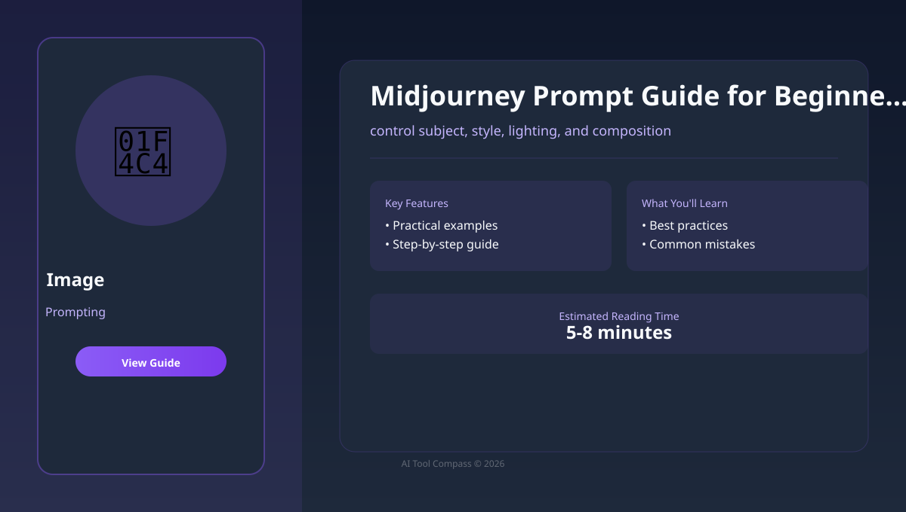
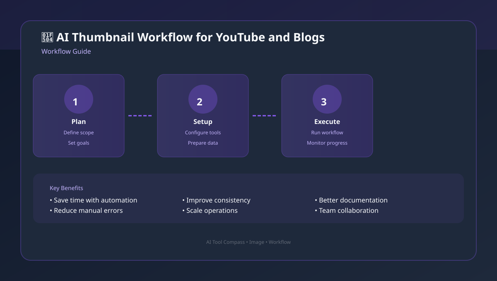
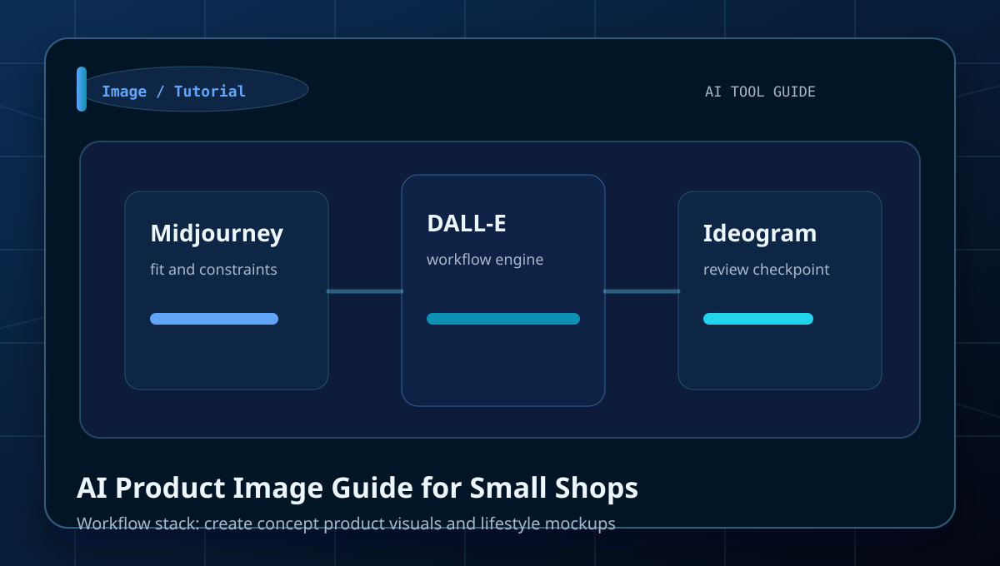
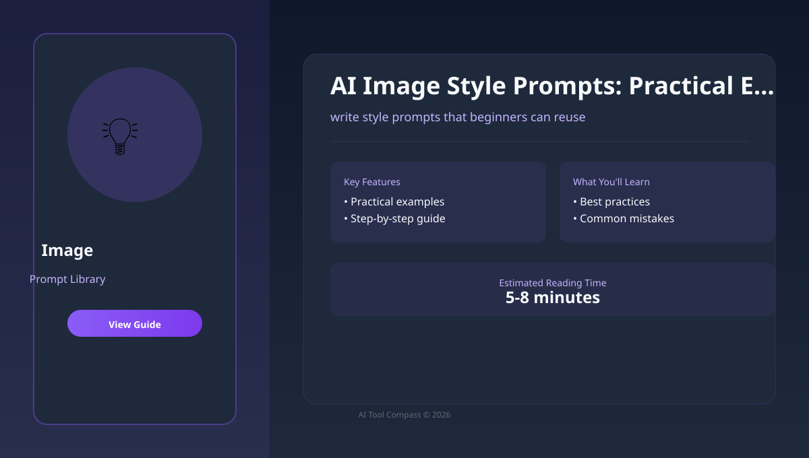
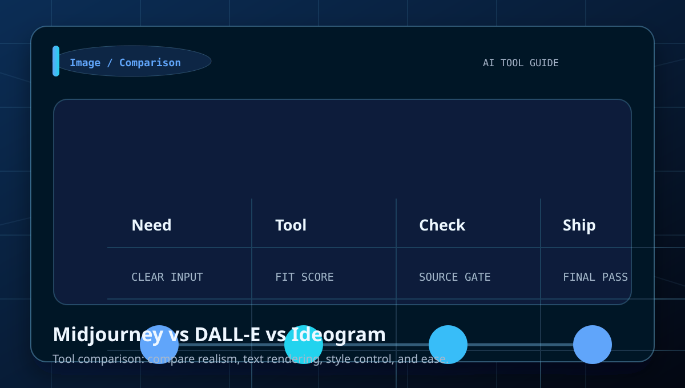
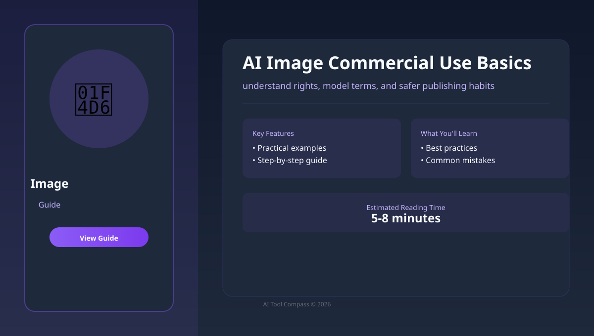
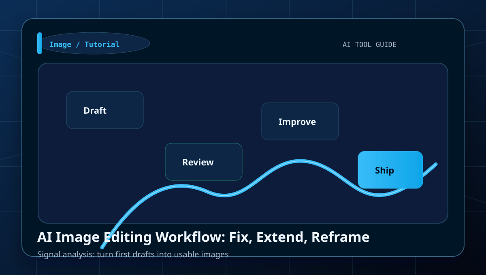
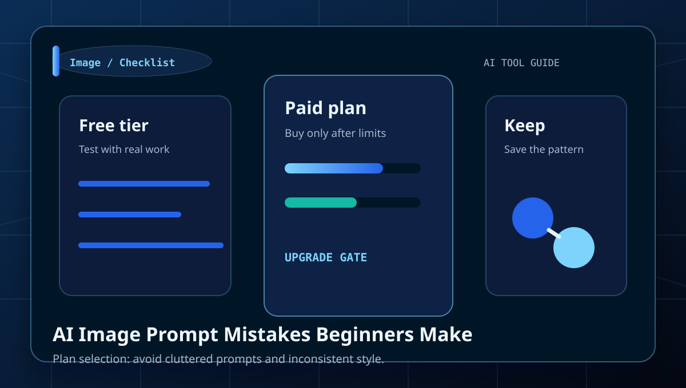
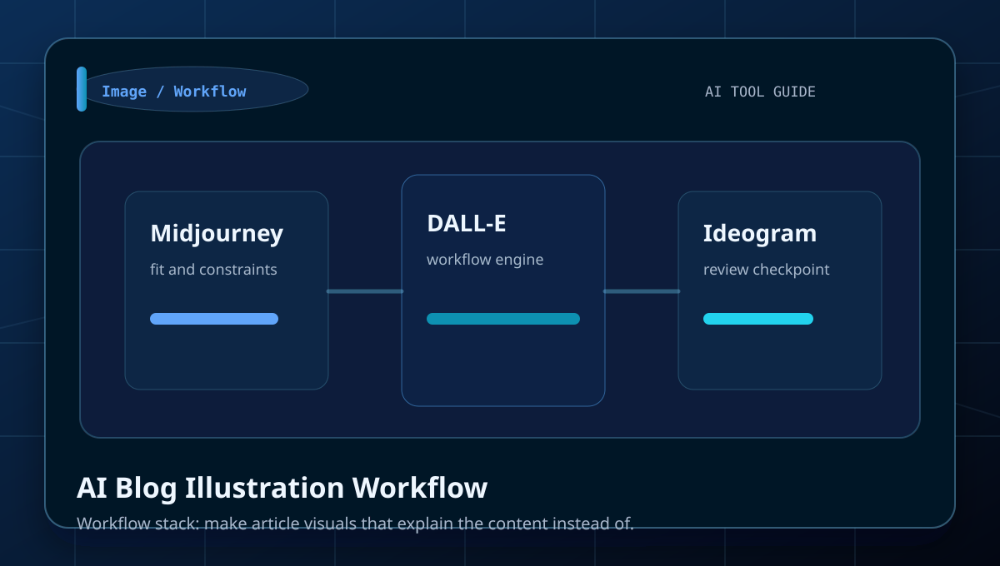

Best AI Image Generators: Beginner Comparison
Start here if you want the fastest overview before drilling into narrower use cases.
Open starting guideCategory
Tutorials, comparisons, prompt examples, and beginner workflows for prompt design, thumbnails, product concepts, illustrations, and brand visuals.
prompt design, thumbnails, product concepts, illustrations, and brand visuals.
Use the comparison tables to decide which tool fits each job.
Start here
A strong category page should not make the reader guess which article matters first. These picks route a beginner into the fastest useful next step.
Start here if you want the fastest overview before drilling into narrower use cases.
Open starting guideUse a comparison page before you choose a subscription, workflow, or default tool in this cluster.
Open comparisonMove from tool discovery into a repeatable sequence that helps a beginner finish an actual task.
Open workflowUse a prompt library or checklist to tighten output quality before you publish, ship, or pay.
Open prompt or checklistUse the cluster well
This layer is here to increase search utility: when to use the category, what to compare, and how to avoid wasting a subscription on the wrong task.
You need help with prompt design, thumbnails, product concepts, illustrations, and brand visuals and want a task-first route instead of opening tools at random.
Do not treat brand awareness as proof. Use the comparison pages to check workflow fit, output quality, and review burden first.
Pick one guide, test one real task, and only then decide whether this cluster needs a paid tool or just a better workflow.
Look for pages with examples, prompts, checklists, and mistake prevention. Those are stronger than generic tool roundups.
Library

Learn how to control subject, style, lighting, and composition with a clear workflow, examples, and beginner mistakes to avoid.

Learn how to choose an image tool for different visual jobs with a clear workflow, examples, and beginner mistakes to avoid.

Learn how to plan clickable thumbnails without making them misleading with a clear workflow, examples, and beginner mistakes to avoid.

Learn how to create concept product visuals and lifestyle mockups with a clear workflow, examples, and beginner mistakes to avoid.

Learn how to write style prompts that beginners can reuse with a clear workflow, examples, and beginner mistakes to avoid.

Learn how to compare realism, text rendering, style control, and ease of use with a clear workflow, examples, and beginner mistakes to.

Learn how to understand rights, model terms, and safer publishing habits with a clear workflow, examples, and beginner mistakes to avoid.

Learn how to turn first drafts into usable images with a clear workflow, examples, and beginner mistakes to avoid.

Learn how to avoid cluttered prompts and inconsistent style instructions with a clear workflow, examples, and beginner mistakes to avoid.

Learn how to make article visuals that explain the content instead of decorating it with a clear workflow, examples, and beginner.